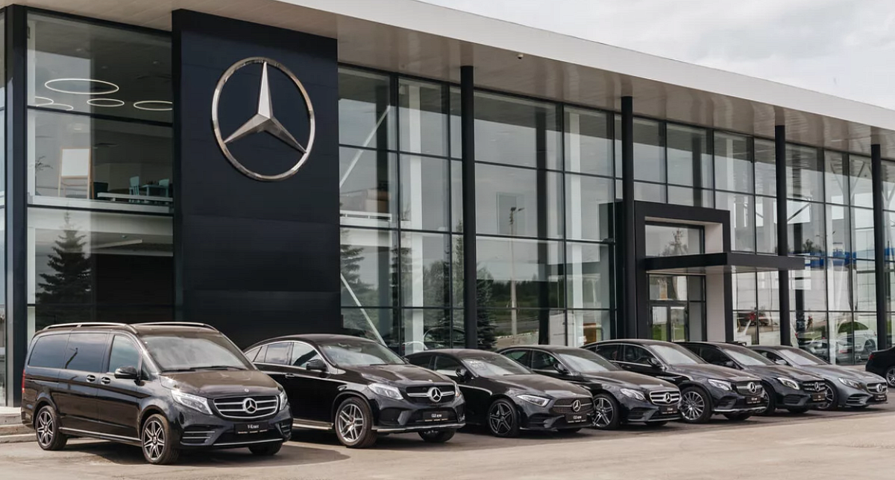

о компании
компания мерседес

Первый в мире автомобиль с бензиновым двигателем был создан Karl Benz в 1886 году — это считается началом истории компании. Название «Mercedes» появилось благодаря дочери предпринимателя Emil Jellinek, которая вдохновила наименование бренда. Знаменитая трёхлучевая звезда символизирует использование двигателей на суше, в воздухе и на воде. Mercedes-Benz одним из первых начал устанавливать системы безопасности, включая ABS и подушки безопасности. Компания активно участвует в автоспорте, особенно в гонках Formula 1, где добилась больших успехов. Mercedes-Benz разрабатывает не только автомобили, но и грузовики, автобусы и даже инновационные электромобили. Бренд считается символом роскоши, качества и передовых технологий во всём мире.
одна из машин компании мерседес

Mercedes-AMG G 63 — это мощный внедорожник премиум-класса от Mercedes-Benz, сочетающий роскошь и высокую производительность. Краткая информация: Двигатель: 4.0 л V8 Biturbo Мощность: около 585 л.с. Разгон 0–100 км/ч: ~4.5 секунды Привод: полный (4MATIC) Особенность: отличная проходимость + комфорт как у люксового автомобиля G 63 отличается узнаваемым «квадратным» дизайном, дорогим салоном и современными технологиями. Это один из самых популярных и престижных внедорожников в мире.